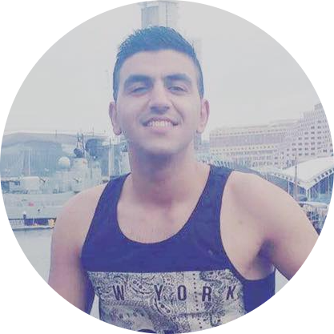

Cloud & DevOps
AWS and Azure delivery, Terraform automation, CI/CD pipelines, migration support, and cloud operations optimisation.
Brisbane, Queensland, Australia • Open to Opportunities
Software Engineer @ QUT | Founder & Builder @ NestedCerts.com | AWS Certifications • Cloud • DevOps

I’m a Software Engineer and DevOps professional focused on cloud infrastructure, automation, and high-quality web delivery. With a Bachelor of IT (Computer Science) from QUT, I build scalable services, improve developer workflows, and ship reliable user-facing products. I also founded NestedCerts to help cloud learners pass AWS certifications faster with structured study systems.
AWS and Azure delivery, Terraform automation, CI/CD pipelines, migration support, and cloud operations optimisation.

End-to-end web development, technical documentation, process improvements, and production support across teams.

Built NestedCerts.com, an AWS certification platform featuring guided learning paths, exam-style questions, and progress analytics.
I’m open to software engineering, cloud, and DevOps opportunities where I can combine technical depth with clear communication and execution. If you want to see what I’m building, visit NestedCerts.com.
Get In Touch